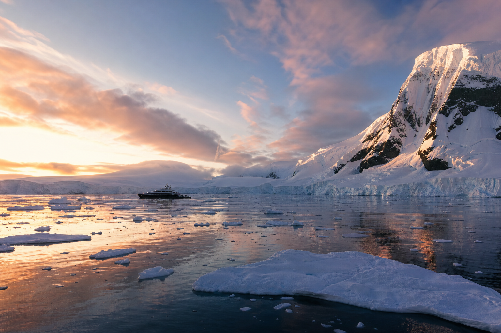

Continuum Expeditions
A private yacht for ten guests. Real landings, long anchorages, and waters that cruise ships rarely reach.
Scroll
A private yacht for ten guests. Real landings, long anchorages, and waters that cruise ships rarely reach.
Bering 88 is an ice class expedition yacht. We work from anchor: land by Zodiac, return for dinner, sleep in the bay. A cruise ship might get two hours ashore. We keep the anchorage.
Private cabins, proper meals at sea, two Zodiacs, and room to change plans when the ice shifts.
"You notice the quiet before you notice the cold."
Emperor penguins, orcas in the floes, landings at Bellingshausen, Deception Island, and the Lemaire Channel. Glaciers and research stations when conditions allow.
Kayak outings, close whale encounters, hikes to bases, and nights on anchor in bays where you can hear the ice moving.



Master & Expedition Leader
25 years in polar waters. Licensed ice pilot. Ross Sea veteran.
First Officer
Weather routing specialist. Finds the anchorages no one else knows.
Naturalist
Marine biologist. Fifteen Antarctic seasons. Knows the colonies and the migration patterns.
Historian & Kayak Guide
Leads landings at Shackleton and Scott's huts. Briefs guests before each historic site.
Chef
Trained in fine dining kitchens. Runs a proper galley at sea.
Join the waitlist or leave a deposit. A manager will call to confirm dates and walk you through payment and paperwork.
Full payment due 120 days before departure. Cancel 180+ days out for a full refund.